Contents
close all; clear all;
Load Hazard Curve and Fit a Polynomial in Log-Log Space
load("HazardCurve.txt") order = '4'; curve = HazardCurve; interval = [0.01,3]; dSa = 0.01; [handles] = createPolyFit(order, curve, interval, dSa);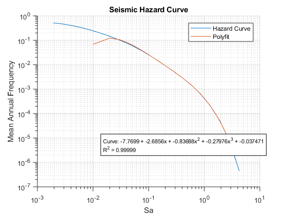
Initialize Variables for Integration
Should we do anything about fact that if the range includes zero we get a Nan?
handles.EDP.IDR = 0.0001:.0001:.15; handles.EDP.PFA = 0.01:.01:4.0; handles.EDP.RIDR = 0.0001:.0001:.1;
Input and Plot Stripe Analysis Results
%GUI Inputs ns = 4; %Number of Stripes nedp = 3; %Number of EDPs n = 30; %Number of Groundmotions %Load Stripes Values from .csv - offset data by one to only get numeric %data %Maybe we could structure this similar to how we structured the fragility %and loss functions filenames=["Stripe1_Sa0.10_1col_S.csv","Stripe2_Sa0.35_1col_S.csv",... "Stripe3_Sa0.70_1col_S.csv","Stripe4_Sa1.05_1col_S.csv"]; handles.stripes = [0.1,0.35,0.70,1.05];%Not sure how these are input into GUI handles = LoadStripeData(handles, filenames,ns); handles = ResponseEstimation(handles);
Stripe1_Sa0.10_1col_S.csv Warning: Variable names were modified to make them valid MATLAB identifiers. The original names are saved in the VariableDescriptions property. Stripe2_Sa0.35_1col_S.csv Warning: Variable names were modified to make them valid MATLAB identifiers. The original names are saved in the VariableDescriptions property. Stripe3_Sa0.70_1col_S.csv Warning: Variable names were modified to make them valid MATLAB identifiers. The original names are saved in the VariableDescriptions property. Stripe4_Sa1.05_1col_S.csv Warning: Variable names were modified to make them valid MATLAB identifiers. The original names are saved in the VariableDescriptions property.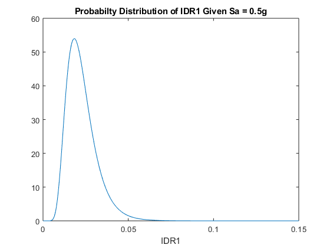 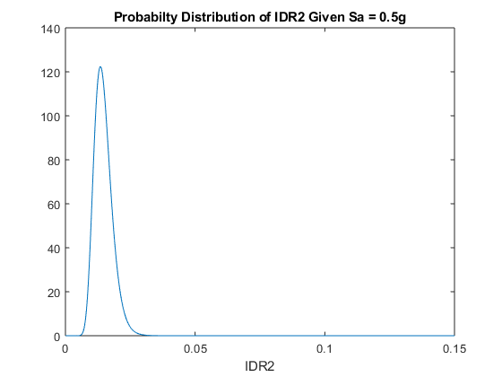 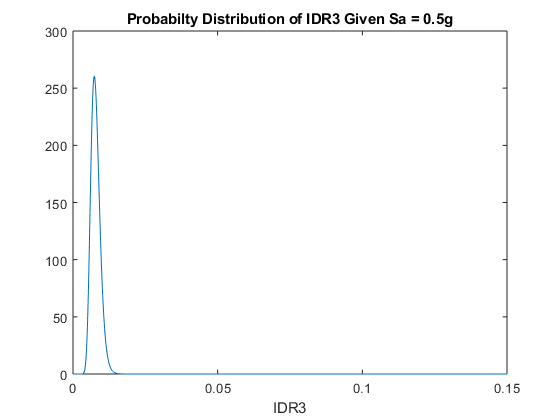 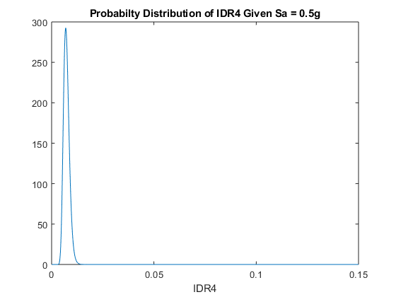 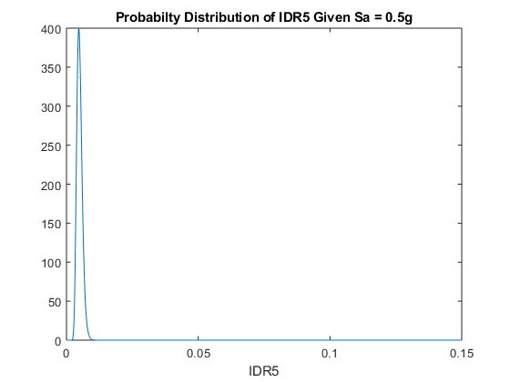 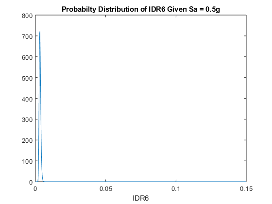 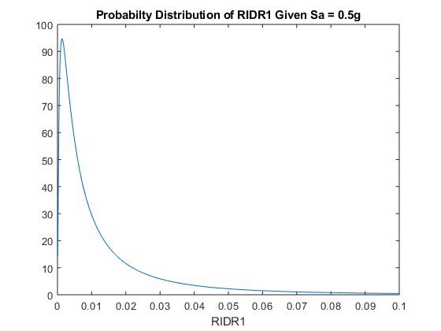 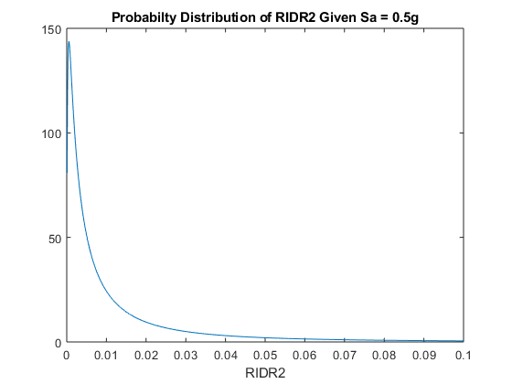 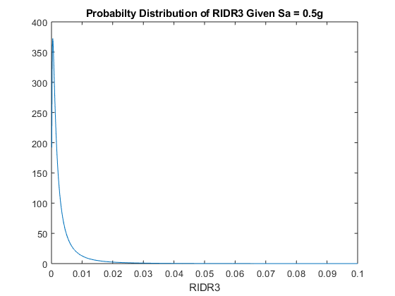 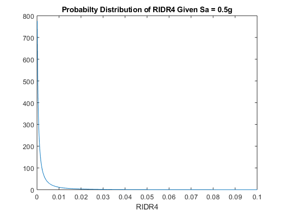 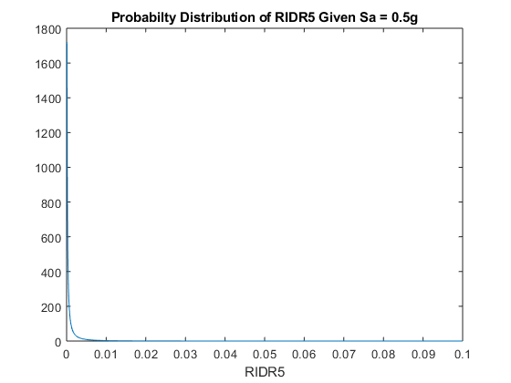 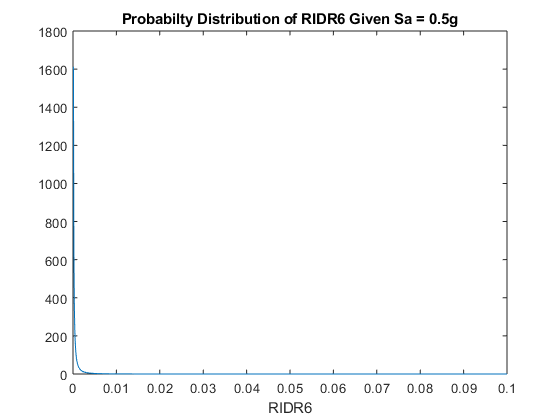 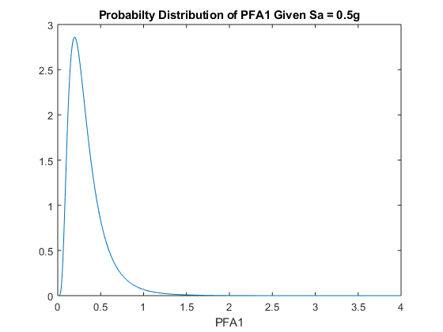 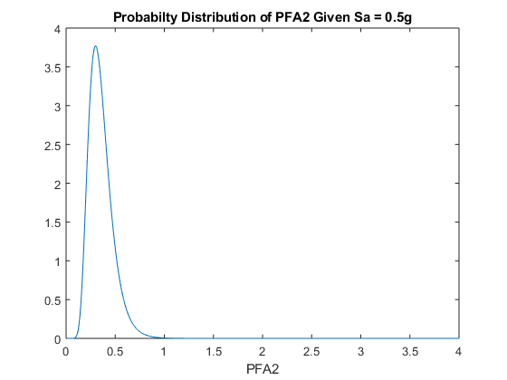 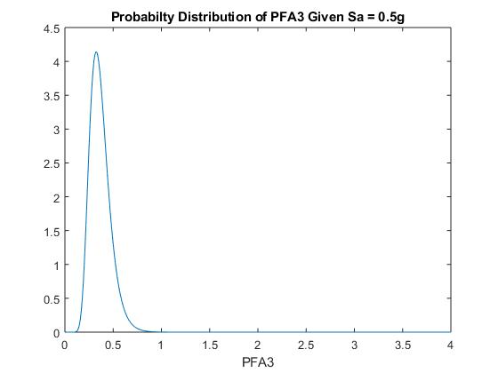 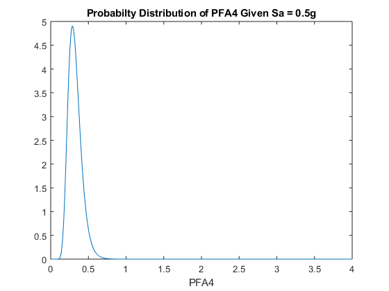 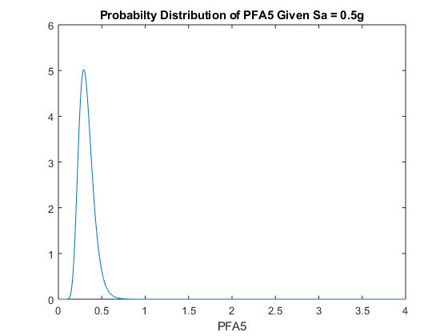 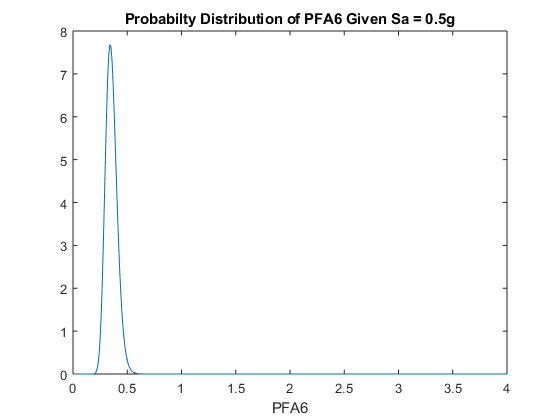 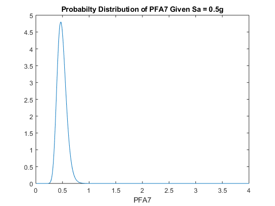
Collapse Fragility, MAF, Probability in 50 years
handles = CollapseFragility(n,handles); %Maybe split out functions for MAF and Probability in 50 years
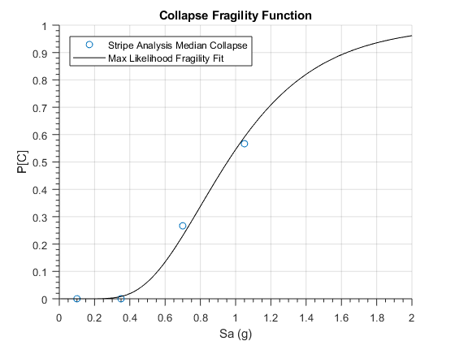 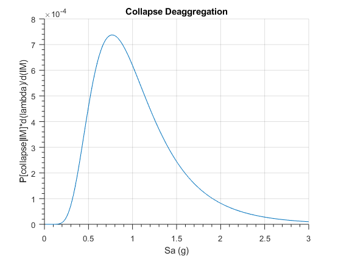 Load Fragility and Loss Functions
handles = loadComputeDamageFragilities(handles, 'SampleFragilityLossFunctionsS.csv');
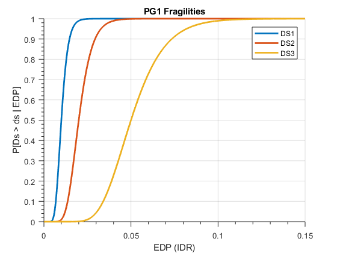 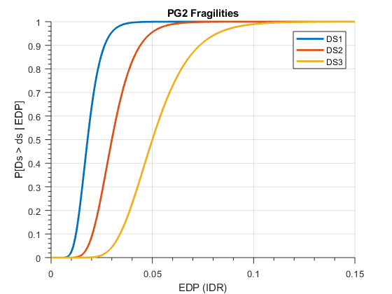 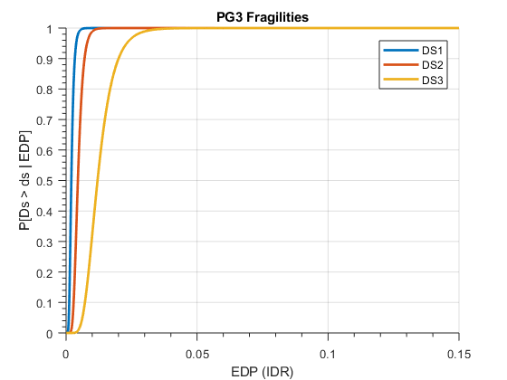 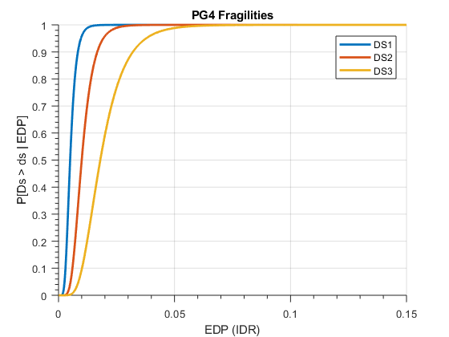 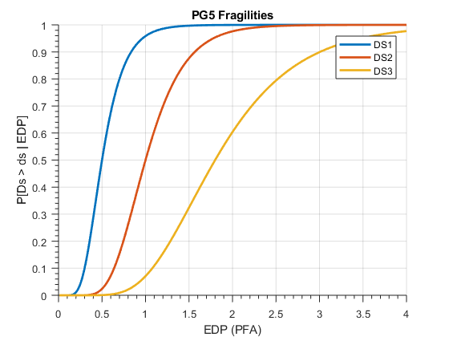 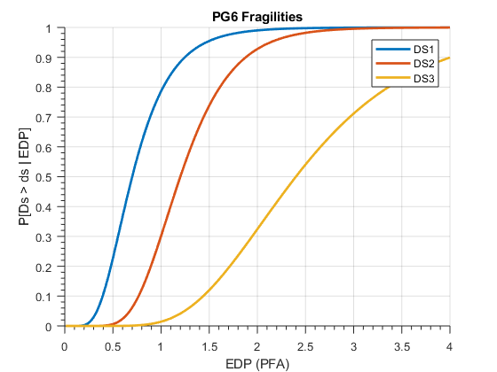 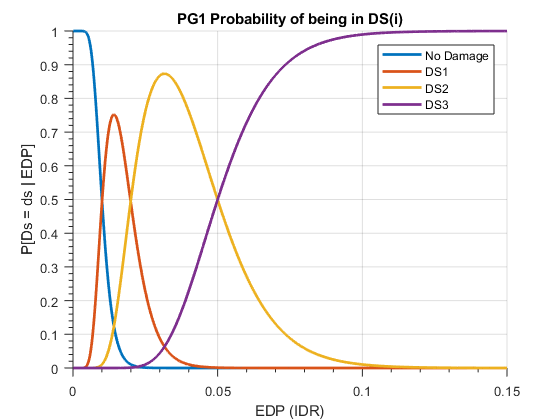 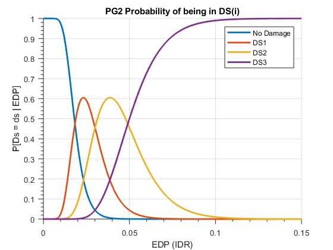 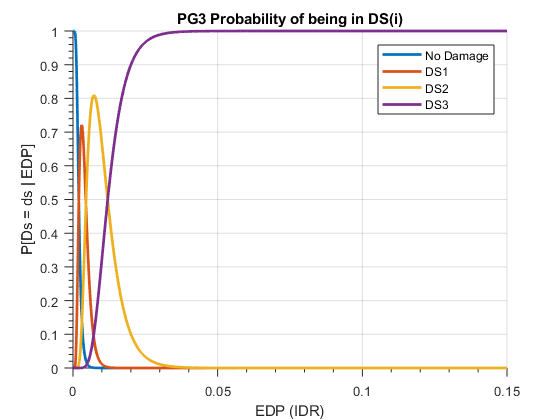 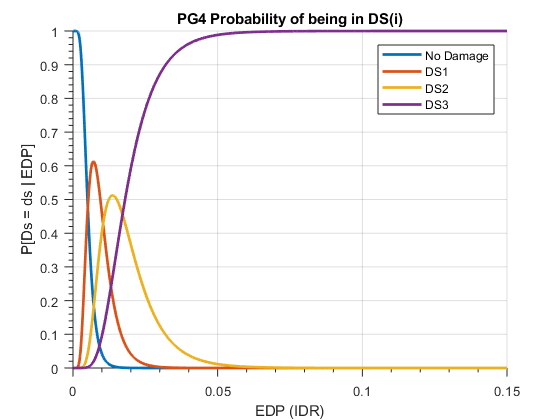 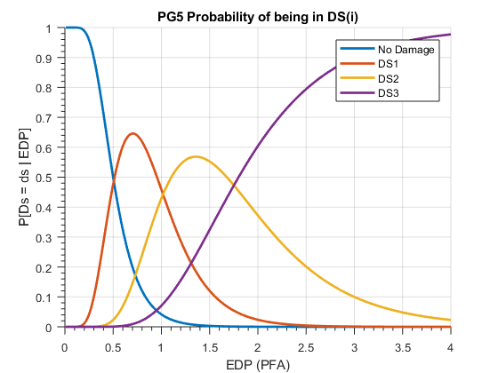 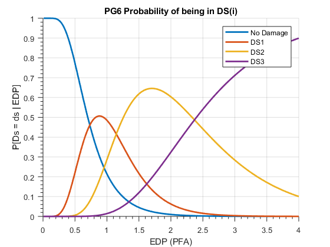 Load Structure Data
% Name of the file to upload filename = 'SampleBuildingDataS.csv'; % Load in the structure data in correct format handles = loadStructure(filename, handles);
Compute Loss Given IM for structure
Return expected loss given EDP conditioned on no collapse and no repair
handles = expectedLoss_EDP(handles); % Return expected loss given IM conditioned on no collapse and no repair handles = expectedLoss_IM(handles); % Probability of Demolition Given No Collapse handles = ExpectedLoss(handles); % Find probabilities of all 3 ingredients (repair, demo, collapse) and plot % all loss functions given IM handles = repairCollapseDemoProb(handles); % Calculate the AAL and deaggregation ratios (could be used for fun things) handles = averageAnnualLoss(handles);
Average Annual Loss: 1.2881e+05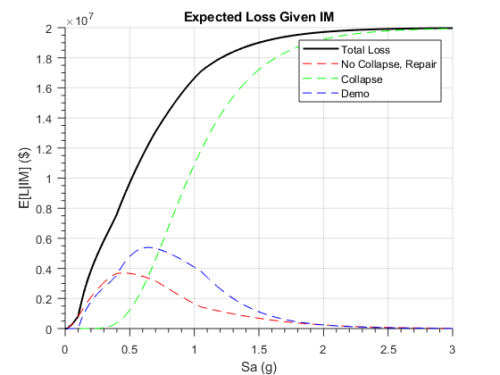